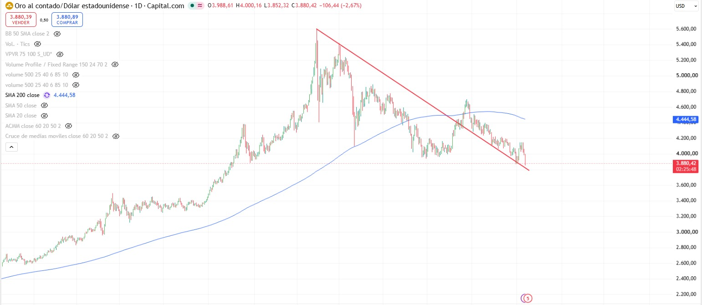
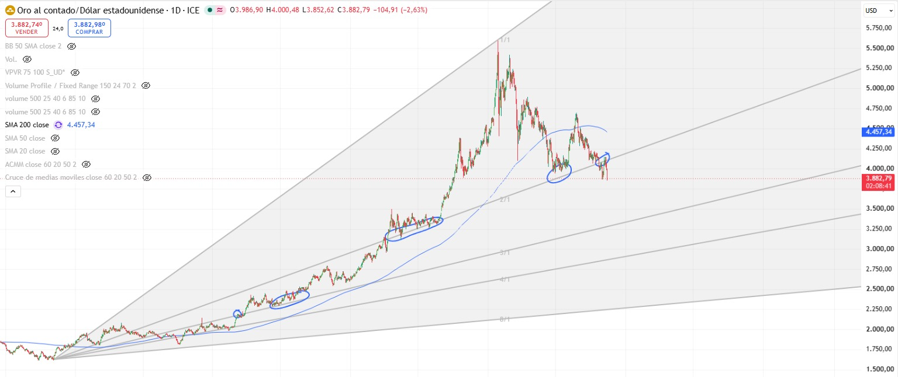
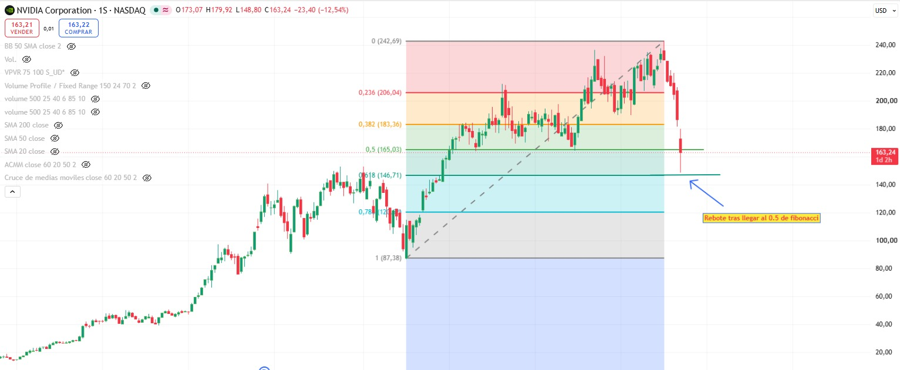
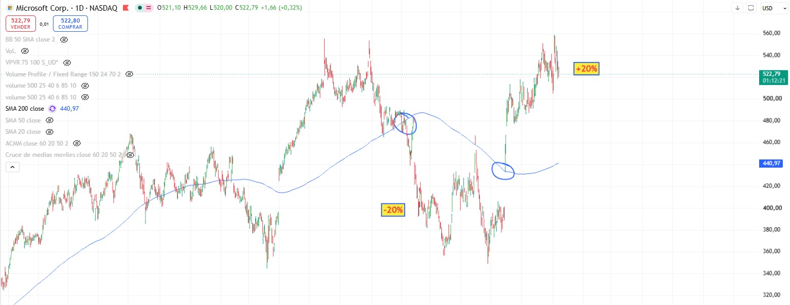
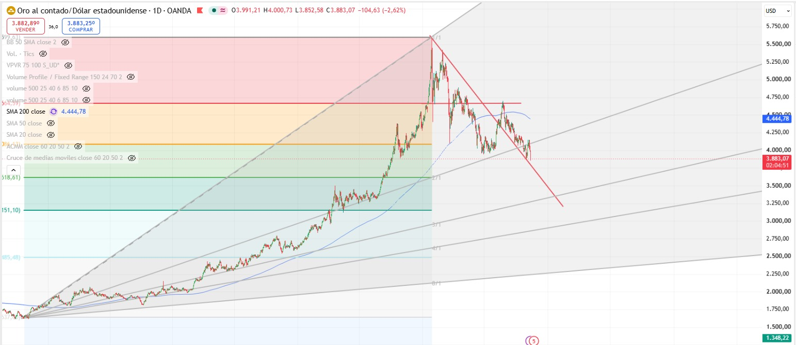

Oro: de resistencia a posible soporte
La directriz roja descendente es la referencia de este ejemplo. La idea es estudiar si una línea que antes frenaba las subidas puede servir de apoyo después de ser superada.

1. La antigua resistencia
La línea roja desciende desde la zona del máximo visible, cerca de 5.600 USD. No es un nivel horizontal: su precio de referencia cambia a medida que avanza el gráfico.
2. La ruptura y la vuelta
En la parte derecha se ve un tramo que supera la directriz, seguido de una caída hacia ella. Esa vuelta es la zona que interesa observar para estudiar un cambio de función. El último precio mostrado es 3.880,42 USD: es el dato de esta imagen, no una cotización en directo.
3. El posible soporte
La hipótesis es que la antigua resistencia frene ahora la caída. Un apoyo seguido de recuperación aportaría evidencia a favor; perder la línea y no recuperarla debilitaría esa lectura. La captura muestra el acercamiento y contacto con la zona, no confirma por sí sola un rebote sostenido. La línea tiene grosor y el eje de fechas no se ve: no se deduce de ella un precio exacto de apoyo ni una fecha de ruptura.
La SMA200 aporta otro contexto
La media azul está identificada como SMA 200 close y marca 4.444,58 USD en la imagen. El último precio aparece por debajo. Esa media es una referencia distinta de la directriz roja: un posible apoyo en la línea no implica haber recuperado la SMA200.
Lo que este ejemplo no dice
No establece una entrada, un objetivo ni un stop. Tampoco convierte el posible apoyo en una señal confirmada ni permite saber qué ocurrió después de la captura.
Abanicos de Gann
Qué es
Son líneas inclinadas trazadas desde un máximo o mínimo relevante, con distintas relaciones entre precio y tiempo.
Para qué sirve
Sirven para organizar posibles zonas dinámicas de soporte y resistencia y observar cambios en el ritmo de una tendencia.
Dónde puede fallar
La referencia 1:1 representa una unidad de precio por una de tiempo. No basta con dibujar una diagonal de 45 grados en pantalla: el resultado depende del punto de origen y de la escala precio-tiempo. Cambiar esa escala cambia la lectura. Una línea del abanico es una referencia de análisis, no una trayectoria que el precio tenga que seguir.

Un origen y varias pendientes
El abanico gris parte del mínimo situado a la izquierda. Sus líneas se abren hacia la derecha y quedan identificadas en esta imagen como 1/1, 2/1, 3/1, 4/1 y 8/1. Se conservan esas etiquetas tal como aparecen, sin recalcularlas ni atribuirles una velocidad exacta en dólares por día.
Qué señalan los círculos
Las marcas azules destacan zonas de la subida y de la corrección posterior. Varias rodean encuentros o aproximaciones del precio a la línea rotulada 2/1. En la parte central se ve una pausa alrededor de ella antes de una nueva subida. Más a la derecha, tras el máximo, el precio vuelve a esa zona y rebota. Son referencias para estudiar la reacción del precio, no una prueba de que la línea cause el movimiento.
La pérdida de la 2/1 al final
En el último círculo el precio vuelve a la línea 2/1 y el tramo final termina por debajo. Esa pérdida debilita la lectura de la línea como apoyo en este trazado. La línea inferior, rotulada 3/1, puede servir como siguiente referencia visual, pero la captura no demuestra que el precio vaya a alcanzarla ni que vaya a rebotar allí.
La escala es parte del análisis
La inclinación que ves en pantalla depende de cómo se relacionan precio y tiempo. Una diagonal visual de 45 grados no basta para validar la 1/1. Esta captura no muestra los ajustes del abanico ni su calibración, así que no permite comprobar que las proporciones estén configuradas como pretende el método de Gann. Antes de usarlo habría que revisar el origen y la escala en el gráfico original.
Dos referencias distintas
La SMA200 azul marca 4.457,34 USD y el último precio visible es 3.882,79 USD, por debajo de la media. Son datos de la imagen, no cotizaciones actuales. La SMA200 y el abanico no son la misma herramienta. Además, aquí la fuente del oro es ICE; en el primer caso de la directriz roja es Capital.com. Se mantienen como ejemplos separados, sin mezclar sus precios ni deducir fechas u operaciones.
Retrocesos de Fibonacci
Qué es
Marcan cuánto ha corregido el precio respecto a un movimiento previo. Se trazan entre dos extremos. Entre las referencias habituales están 23,6%, 38,2% y 61,8%; también se usa el 50%, aunque no es una proporción derivada de Fibonacci.
Para qué sirve
Ayudan a señalar zonas donde observar una posible reacción del precio.
Dónde puede fallar
El dibujo depende de qué máximo y mínimo se elijan. Que el precio llegue a un nivel no obliga a que rebote. Importan la reacción del precio y el contexto, no la coincidencia con una cifra.

El tramo elegido y sus niveles
El retroceso se mide sobre el avance desde 87,38 hasta 242,69 USD. En este trazado, 0 está arriba y 1 abajo: cuanto más cae el precio desde el máximo, mayor es el retroceso. Las referencias visibles son 0,236 en 206,04; 0,382 en 183,36; 0,5 en 165,03 y 0,618 en 146,71 USD.
Qué muestra la última vela
La cabecera indica apertura 173,07, máximo 179,92, mínimo 148,80 y último precio 163,24 USD. Hay recuperación desde el mínimo, pero el precio sigue por debajo de 165,03, el nivel 0,5. El mínimo de 148,80 queda por encima de 146,71: no se observa un toque exacto al 0,618. El contador junto al precio indica que la vela semanal aún está abierta en la captura.
Una aclaración sobre la anotación
El rótulo original dice «Rebote tras llegar al 0.5 de fibonacci», mientras que la flecha apunta hacia la zona del 0,618. Se conserva la imagen tal como se tomó; esta explicación distingue los dos niveles para evitar confundirlos. Recuperarse desde un mínimo dentro de una vela abierta no confirma un rebote sostenido ni convierte el nivel en una señal automática.
Este es un ejemplo de lectura del gráfico, no una afirmación sobre una posición de una cartera ni una recomendación de compra o venta.
SMA200
Qué es
Es la media simple de los últimos 200 cierres del marco temporal elegido.
Para qué sirve
Suaviza el precio y ofrece una referencia de tendencia a largo plazo dentro de ese marco.
Dónde puede fallar
Una SMA200 diaria no equivale a una SMA200 semanal. El precio por encima o por debajo de la media aporta contexto, pero no demuestra por sí solo que una tendencia vaya a continuar. Como usa precios pasados, reacciona con retraso y puede generar cruces repetidos en mercados laterales.

La pérdida de la media
En el primer círculo, hacia el centro-derecha del gráfico, el precio pasa de la zona de la SMA200 azul a situarse por debajo. Después se ve un tramo de caída. La media ayuda a reconocer el cambio de contexto, pero no anticipa el mínimo de ese movimiento.
La recuperación posterior
En el círculo de la derecha, el precio vuelve a superar la SMA200 y continúa por encima en el tramo posterior visible. La media tarda más en cambiar de dirección: sigue descendiendo durante parte de la recuperación, luego se aplana y gira al alza. Es el retraso propio de calcularla con los últimos 200 cierres diarios.
Una referencia, no una barrera
En otras zonas de la imagen el precio cruza la media varias veces sin mantener una dirección clara. Por eso un cruce aislado no garantiza una tendencia. El último precio mostrado, 522,79 USD, está por encima de la SMA200, que marca 440,97 USD. Son valores de esta captura, no una cotización en directo.
Qué significan los rótulos ±20 %
Se conservan como anotaciones originales del gráfico. La imagen no fija los puntos exactos de inicio y final del cálculo, por lo que no se presentan como rendimientos medidos, resultados de una operación ni resultados garantizados.
Precio contra media, no cruce de dos medias
Este ejemplo muestra cruces del precio con una SMA200. Las SMA50 y SMA20 aparecen ocultas en la lista de indicadores: no sirve para afirmar que se haya producido un cruce entre esas dos medias. Tampoco se deducen fechas, precios de entrada o salida ni una posición personal.
Cómo leerlas juntas

Cuatro herramientas, cuatro preguntas
Los niveles horizontales de Fibonacci sitúan la corrección dentro del gran avance elegido. El abanico de Gann organiza referencias inclinadas desde el mínimo de la izquierda. La SMA200 azul resume los últimos 200 cierres diarios. La directriz roja descendente sigue la estructura de la caída desde el máximo. Juntarlas permite contrastar una lectura con otras referencias del mismo gráfico.
Qué muestra esta captura
El último precio visible es 3.883,07 USD. Está por debajo de la SMA200, que marca 4.444,78 USD, y de la línea del abanico rotulada 2/1 en el tramo final. Las últimas velas están cerca de la directriz roja, pero esa proximidad no confirma un apoyo ni una recuperación sostenida. Los niveles de Fibonacci añaden referencias horizontales; no obligan al precio a detenerse en ellas.
Confluencia no significa que todo coincida
Una confluencia de zona aparece cuando distintas referencias se aproximan en un mismo lugar. Aquí hay varias herramientas en el mismo gráfico, pero no todas coinciden en el último precio: la SMA200 queda bastante por encima. Conviene distinguir las referencias cercanas al precio de las que solo aportan contexto. Dibujar más líneas no convierte automáticamente una zona en más fiable.
Cómo contrastar el escenario
Si el precio recuperase la 2/1 y se mantuviese sobre la directriz, esa evolución sería distinta de una pérdida de la zona y un rechazo al intentar volver. La SMA200 seguiría siendo otra referencia por recuperar. Son escenarios condicionales para leer el gráfico, no una entrada, un objetivo o una predicción de lo que ocurrirá.
Los límites siguen presentes
La captura no permite comprobar la calibración precio-tiempo de Gann. Parte de las etiquetas de Fibonacci queda cortada u oculta en el borde izquierdo: no se reconstruyen sus valores exactos. Tampoco se inventa una fecha para la cotización. OANDA es la fuente de este ejemplo, distinta de ICE y Capital.com en los casos anteriores; sus precios se conservan separados y no se presentan como cotizaciones en directo.
La coincidencia entre varias herramientas ayuda a ordenar un escenario, pero no demuestra que sea correcto. Muchas usan los mismos precios y no son confirmaciones independientes. El marco temporal, la forma de trazar los niveles y las condiciones que invalidan la idea deben quedar claros.
Contenido educativo. No es asesoramiento financiero ni una recomendación de compra o venta. Los precios son los que muestran las capturas, no cotizaciones actuales.